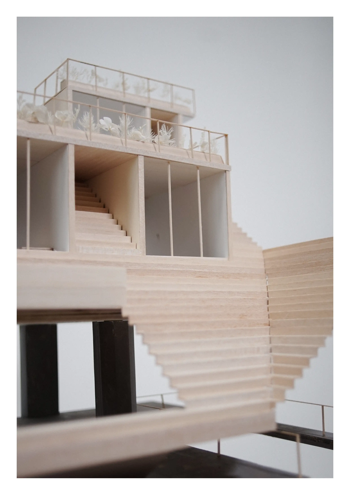
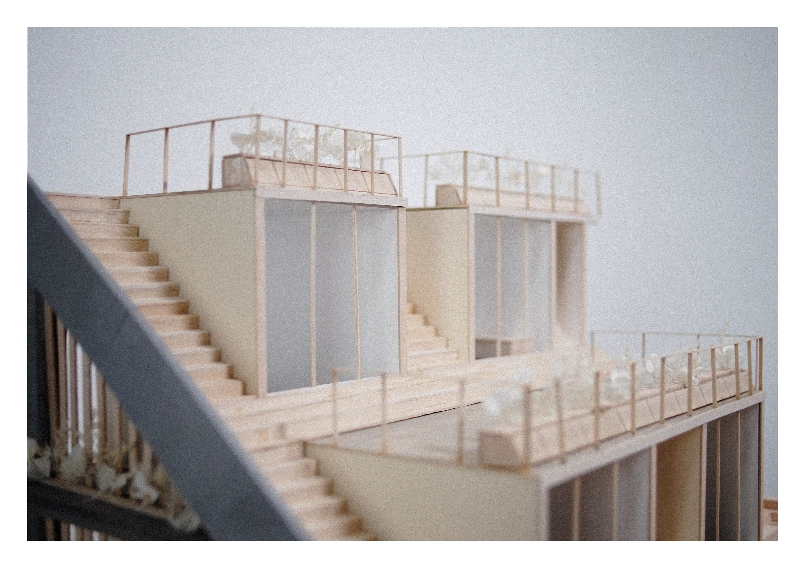
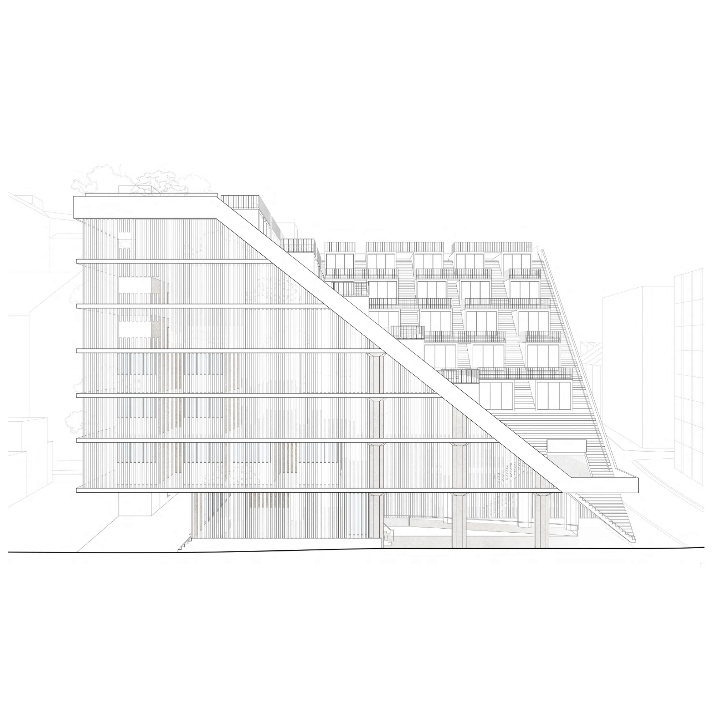
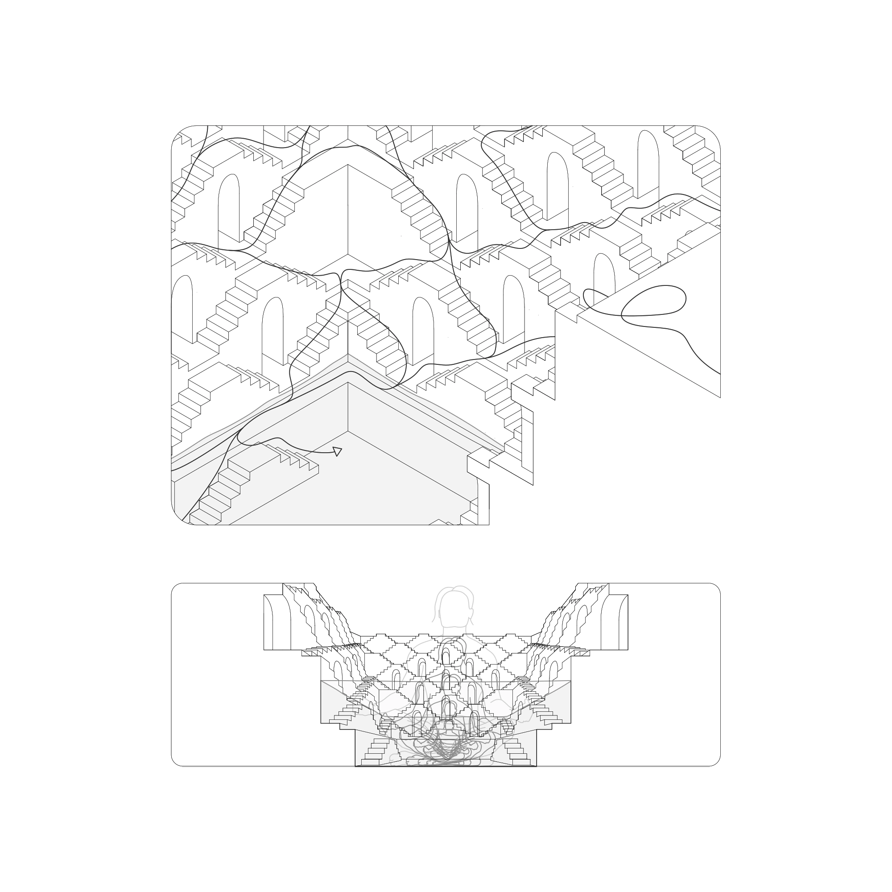

The stepwell is a method of collecting and storing water, originating in the arid regions of India. While originally excavated purely
for water access and storage, they’ve evolved into a way of architecturally celebrating water as a source of life. Part of the stepwells’ social
evolution is how they’ve been articulated. By drawing the user down a labyrinth of stairs with no defined promenade, they’re allowed to
curate their own experience. To seek sun or shade, to find the best spot for a cool breeze – it empowers the user. This is the perspective we
chose to work from: the stepwell’s transformation from a simple resource into the more socially oriented landscape of steps we find most
memorable. While the external central staircase of our student housing project offers this experience, the main study and creative spaces,
kitchens, and laundries are situated within an open plane enclosed by a timber slat facade. This design provides a tranquil retreat from the
dynamic energy of the steps. Incisions through the slats reveal the only social moments within those spaces, at times tracing the contour of
the staircase as a symbolic representation of their social power.
The idea of using steps as a method of organizing social space is the quality of the stepwell we were most drawn to. We believe that
utilizing such a repetitive organization scheme will actually increase variation in movement, create dynamic social engagement, and instill
an explorative spirit within the students. The images on this spread break down and explain how the program of the stepwell was adapted
to our site. After significant iteration, our group decided to take the form quite literally, as it was the most seamless way to translate the
circulation of the stepwell to our site.
Location: Ultimo, NSW – Gadigal Country
Year: 2024
Tutor, Coordinator: Willian Feuerman, Endriana Audisho
Institution, Studio: University of Technology, Sydney, Studio 4
Result: High Distinction
Group Members: Joshua Dambiec, Kathryn Du Pre le Roux